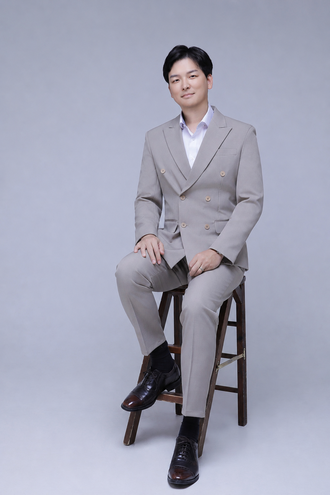

0만개+
누적 판매 상품 수량
0만명+
누적 주문 고객 수
0억+
누적 판매 매출
<3hr/wk
주당 부업 투자 시간
00
About
부업하는
직장인,
최석원입니다.
월급으로 부족한 자본주의 시대, 해답을 찾습니다.
2020년 퇴근 후 작게 시작한 쇼핑몰을 현재까지 운영하고 있으며, AI가 발전함에 따라 업무시간도 현저히 줄었습니다.
회사에선 실무담당자이자 동시에 1인 사업체를 운영하면서 겪었던 수많은 업무를 외주와 자동화를 통해 최적화 시켰습니다. 그 과정에서 AI 에이전트의 가치를 보았고, 새로운 사업으로 확장해 나아갑니다.
"AI는 사람의 일자리를 빼앗는 것이 아니라,
그것을 잘 쓰는 사람의 가치를 높이는 것이다"
부업
시스템
설계자
업무효율
프로세스
AI
셀러
강의
크리에이터
가치
긍정
목표
01
Ventures
10만개+
2020년 쇼핑몰 개설 이후 현재까지 누적 판매한 상품 수량입니다. 베이킹 전문도구 단일 카테고리에서 높은 재구매율을 기반으로 꾸준히 성장했습니다.
쇼핑몰 · 2020~현재
5만명+
화이트펭귄을 통해 상품을 주문한 누적 고객 수입니다. 단골 고객 비율이 높으며, 제품 만족도 기반의 자연 성장이 이어지고 있습니다.
고객 · 2020~현재
10억+
창업 이후 현재까지의 누적 매출 총액입니다. 공급·물류·CS를 100% 외주화하고 AI 자동화를 도입해, 1인이 운영하는 구조로 달성한 억대 매출입니다.
매출 · 2020~현재
<3시간/주
2026년 현재 주 3시간 미만으로 쇼핑몰 전체를 운영하고 있습니다. AI 도구 도입과 시스템화된 프로세스로 본업과의 완전한 병행이 가능한 구조입니다.
효율 · 2026
100+
납품 이력이 있는 B2B 제휴 거래처 수입니다. 카페, 호텔, 출판업체 등 다양한 업종과 협력하며 안정적인 수익 구조를 구축했습니다.
제휴 · 2026
1인
공급·물류·CS를 외주화하고 AI로 반복 업무를 자동화해, 직접 손대지 않아도 돌아가는 구조를 완성했습니다. 본업을 유지하면서 혼자 운영 가능한 완전한 1인 사업 시스템입니다.
1인 운영 · 2026
02
Career
2020.02
현재5년+
현재5년+
Founder · CEO
화이트펭귄 (온라인쇼핑몰)
베이킹 전문도구 단일 카테고리 쇼핑몰 창업 및 운영. 공급·물류·CS를 100% 외주화하고 AI 자동화를 도입해 누적 매출 10억 원 달성. 1인 사업체 최적화로 현재 주 3시간 미만 운영 체계 완성.
창업 · 운영
2024.12
현재6개월+
현재6개월+
크리에이터 · 강사
셀러_리맨
직장인 부업 온라인쇼핑몰 운영 노하우를 콘텐츠화. 실전 셀러 경험 기반 강의 제작 및 커뮤니티 운영. 시스템 자동화·AI 활용 부업 모델을 강의 형태로 전파.
크리에이터 · 강의
2025.01
현재5개월+
현재5개월+
AI 강사 · 실무 적용
AI 에이전트 실무적용
업무 자동화 및 AI 에이전트 실무 도입 컨설팅. 2025년 사내 AI TFT 팀장을 역임하며 조직 전반의 AI 전환을 주도. 쇼핑몰·사무·기획 업무의 AI 전환 경험을 바탕으로 팀·기업 대상 교육 진행. Claude Code, ChatGPT, Gemini 활용 자동화 파이프라인 구축 강의.
AI · 교육
2015.01
현재10년+
현재10년+
개인 투자자
주식 · 금융투자
10년 이상 국내외 주식 시장 직접 투자. 뉴스·공시·실적 분석 기반의 독자적 투자 판단 체계 구축. AI 뉴스레터 서비스를 통한 정보 수집 자동화로 투자 리서치 효율화.
투자
2021.01
현재4년+
현재4년+
개인 투자자
부동산 투자
수도권 중심 부동산 시장 분석 및 실물 투자. 상업용부동산 1개 직접 운영 중이며, 임장·공시지가·정책 흐름 분석을 병행하며 장기 자산 구축 전략을 실행 중. 직장·부업 수익을 실물 자산으로 전환하는 복리 설계.
투자 · 자산
2019.06
현재6년+
현재6년+
플레이어 · 전략 연구
롤토체스 (TFT)
팀파이트 택틱스(TFT) 6년 이상 플레이, 마스터 티어 10회 이상 달성. 확률·기댓값·밴픽 전략 분석 습관이 사업 의사결정과 투자 리스크 관리로 이어지는 사고 훈련. 전략 게임 특유의 상황 적응력을 실무에 응용.
게임 · 취미
03
Capabilities
업무 효율화
- AI 도입 후 작업시간 80% 단축
- 5년 이상 1인 완전 운영
- 본업·부업 완전 병행 체계
- SOP 및 반복 업무 자동화
- 주 3시간 이하 쇼핑몰 운영
빠른 실행력
- 아이디어 → 런칭 1개월 미만
- 실패 프로젝트 10개+ 경험 보유
- 소규모 테스트 → 검증 → 확장
- 즉시 프로토타이핑 능력
- 데이터 기반 빠른 피벗
꾸준함
- 창업 이후 매년 매출 성장
- 6개월 이상 지속 운영 원칙
- BEP 달성 후 확장 원칙 준수
- 5년+ 동일 카테고리 집중
- 장기 복리 사고 기반 의사결정
학습 능력
- AI 신기술 즉시 실무 적용
- 상위 셀러 전략 벤치마킹
- 셀러 커뮤니티 지속 참여
- 사내 AI TFT 팀장 역임
- 자기계발 교육 꾸준히 수강
네트워킹
- B2B 제휴 거래처 100여 곳
- 출판사·인플루언서·유튜버 협업
- 셀러 커뮤니티 운영 경험
- 강의 수강생 네트워크 구축
- 카페·호텔·업체 다업종 협력